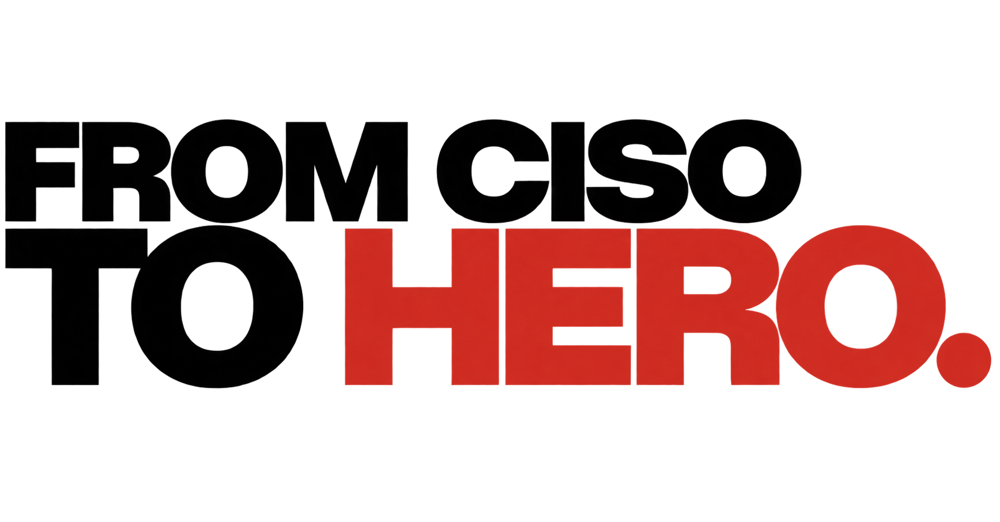

Managementsysteme
Aufbau und Weiterentwicklung eines ISMS sowie die Einordnung von Anforderungen wie ISO 27001, TISAX und BSI IT-Grundschutz.
Informationssicherheit · Eine Marke der wescaleIT AG
FCTH ist die Marke der wescaleIT AG für Informationssicherheit. Sie richtet sich an Menschen, die Sicherheit in ihrem Unternehmen aufbauen, weiterentwickeln und im Alltag wirksam machen wollen.
Zu FCTH
Wofür die Marke steht
Ob du ein Informationssicherheits-Managementsystem aufbaust, ein bestehendes System weiterentwickelst oder dich auf ein Audit vorbereitest: Bei FCTH findest du den fachlichen Einstieg. Im Mittelpunkt stehen die Menschen, die Informationssicherheit im Unternehmen verantworten und Anforderungen in die Praxis übersetzen.
FCTH richtet sich an Informationssicherheitsbeauftragte, CISOs und Verantwortliche in Unternehmen, die ihre Informationssicherheit strukturiert weiterentwickeln möchten.
Deine Orientierung
Aufbau und Weiterentwicklung eines ISMS sowie die Einordnung von Anforderungen wie ISO 27001, TISAX und BSI IT-Grundschutz.
Orientierung bei GAP-Analysen, Risikoanalysen und internen Audits.
Zusammenarbeit mit den Menschen, die Informationssicherheit im Unternehmen gestalten und umsetzen.
Die Verbindung zu wescaleIT
FCTH bündelt den Schwerpunkt Informationssicherheit unter einer eigenen Marke. Dahinter steht die wescaleIT AG. Die Marke gibt dem Thema einen klaren Auftritt; das gemeinsame Unternehmen verbindet die Menschen, ihre Zusammenarbeit und ihre Entwicklung.
Dein nächster Schritt
Die fachlichen Inhalte und Kontaktmöglichkeiten für Informationssicherheit findest du auf der FCTH-Website. Wenn du bei uns in diesem Bereich arbeiten möchtest, führt dich unser zentraler Karrierebereich zu den offenen Stellen.